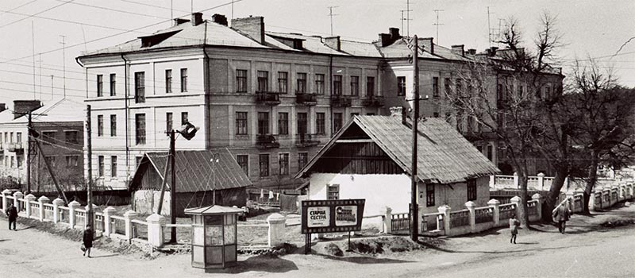
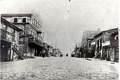
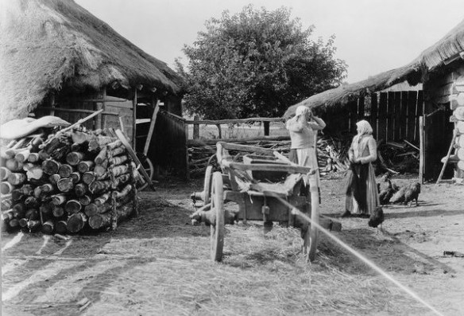
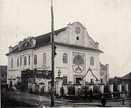

Шепетівка — місто обласного значення в Україні, адміністративний центр Шепетівської міської громади та Шепетівського району Хмельницької області.
Населення: 41 189 особа (2020), 43 661 особа (2010); 47 988 осіб (2007), 48 212 осіб (2001).
Місто розташоване на річках Гуска і Косецька (басейн Горині), за 100 км. від Хмельницького.
Вузол залізничних (станції Шепетівка і Шепетівка-Подільська) і автомобільних шляхів. Харчова (цукровий комбінат), деревообробна та добувна промисловість.
Заводи: культиваторів, «Пульсар», механічний та інші. Музей пропаганди. Шепетівський коледж ПДАТУ; медичне училище; пансіон.
Відоме з 1594 року. Статус міста з 1619 року.
Історія Шепетівки

Давня доба:

Археологічними дослідженнями середини XX століття виявлено, що територія міста була заселена людьми з давніх часів (знайдено ножі та інші знаряддя праці доби неоліту).
Поблизу Шепетівки в урочищі Гусеньці під час археологічних розкопок виявлено курганний могильник зі скарбом кельтських сокир доби бронзи.
На околицях міста височать кургани скіфо-сарматських часів.
1594—1772: Велике князівство Литовське і Річ Посполита:
Перша згадка про населений пункт датується 1594 роком: село Шепетівка входило до Кременецького повіту Волинського воєводства як володіння Андрія Ждярського.
Населення Шепетівки зазнавало спустошливих нападів кримськотатарських орд та польсько-шляхетських військ, одночасно інтенсивно відбувався процес покріпачення селянства.
У відповідь на феодальний гніт селяни та ремісники брали участь у повстаннях 1591—1593 років на чолі з гетьманом Криштофом Косинським та у 1594—1596 роках — під проводом Северина Наливайка.
Під час визвольної війни в липні 1648 року, коли селянсько-козацькі полки Максима Кривоноса підійшли до Полонного, мешканці Шепетівки та навколишніх сіл поповнили лави українського війська.
Тоді ж Шепетівку зайняло українське козацьке військо та залишило в ньому залогу, яка під час утворення восени 1648 року Волинського полку стала основою його Шепетівської сотні.
В липні 1649 року Шепетівку спалили загони воєводи белзького, що призвело до її занепаду.
За податними описами 1650 року тут налічувалося лише три будинки.
Це пояснюється також тим, що частина мешканців Шепетівки переселилася на Наддніпрянщину.
У цьому ж році Шепетівка стає містечком як власність князя Владислава Домініка Заславського, а в 1673 році переходить у володіння князів Любомирських як придане за княжною Заславською, пізніше — стає власністю князів Санґушків.
Внаслідок розподілу маєтків між князями Санґушками: Павлом — маршалком Великого князівства Литовського, Ієронімом — воєводою литовським, Янушем — стражником Великої корони — Шепетівка разом з довколишніми селами дісталася князю Ієроніму і довгий час залишалася власністю його нащадків по прямій лінії.
В 1859 році місто перейшло до графа Альфреда Потоцького, який оженився на дочці Романа Санґушка Марії.
Потоцькі володіли Шепетівкою до 1917 року.
Перша світова Війна:
В роки першої світової війни Шепетівка опинилась у прифронтовій смузі.
Сюди прибували біженці з Польщі. Не вистачало житла, зростали ціни на продукти, предмети широкого вжитку.
Через залізничну станцію безперервно йшли ешелони з пораненими солдатами.
Українська Народна Республіка:
Звістка про Лютневу революцію в Петрограді досягла Шепетівки на третій день. Поряд з органами влади, які представляли Тимчасовий уряд, впродовж першої половини березня 1917 р. в Шепетівці обрано Ради робітничих і солдатських депутатів, які незабаром об'єдналися в одну Раду.
Командант Січових Стрільців Євген Коновалець (перший ліворуч) у Шепетівці. Жовтень 1919 р.
Перемога Жовтневого збройного перевороту у Петрограді викликала в Шепетівці численні демонстрації і мітинги. 13 грудня 1917 р. на цукровому заводі відбувся заколот робітників за участю російських солдатів гарнізону, на якому було проголошено радянську владу.
Та вже через кілька днів у Шепетівці до влади прийшла Центральна Рада, війська якої увійшли до містечка.
Проте протримались вони в місті недовго. На початку січня 1918 р. в Шепетівці було відновлено радянську владу.
В лютому 1918 р. містечко відбили гетьманські війська, які господарювали тут майже до кінця року.
Потім влада перейшла до Директорії.
У 2-й половині квітня 1919 року в районі Шепетівки розгорнулися жорстокі бої.
Частини 1-ї та 2-ї Українських радянських дивізій 7 травня захопили містечко.
У серпні 1919 року влада в Шепетівці перейшла до війська Симона Петлюри, наприкінці року місто окупували польські легіони.
У липні 1920 року в Шепетівку ввійшли частини 45-ї стрілецької дивізії під командуванням Й.
Якіра, які незабаром змушені були поступитися владою армії УНР.
У 1919 році в Шепетівці ходили власні гроші — оскільки влада часто мінялась, єврейська громада міста вирішила випускати місцеві грошові купюри — карбованці.
В 2-й половині листопада 1920 р. в Шепетівці знову загарбали більшовики, створено комітет незаможних селян.